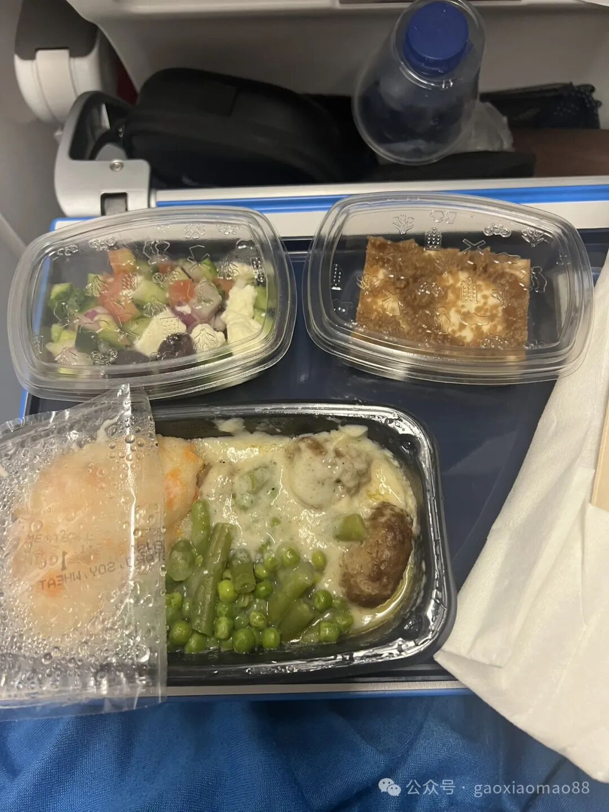
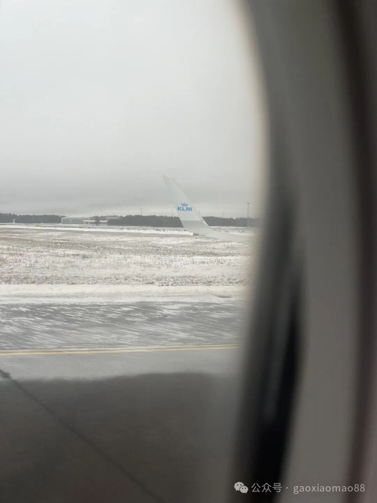
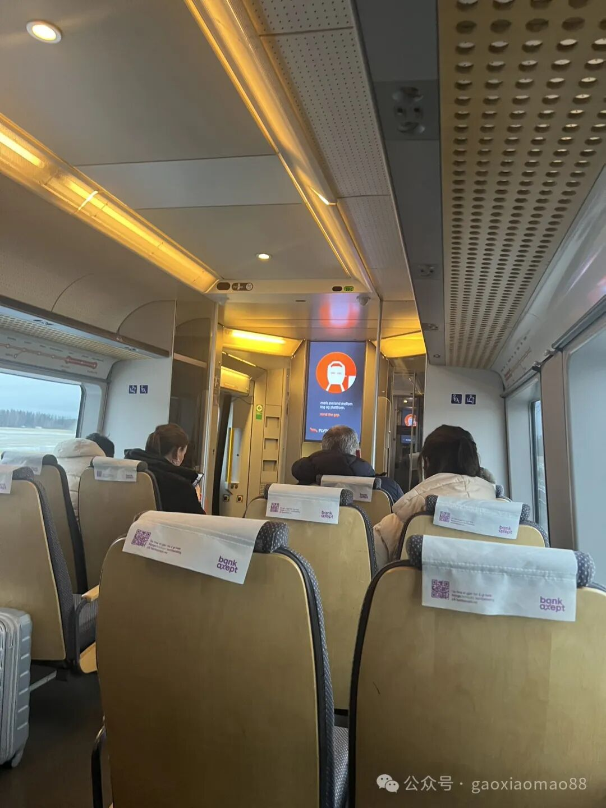
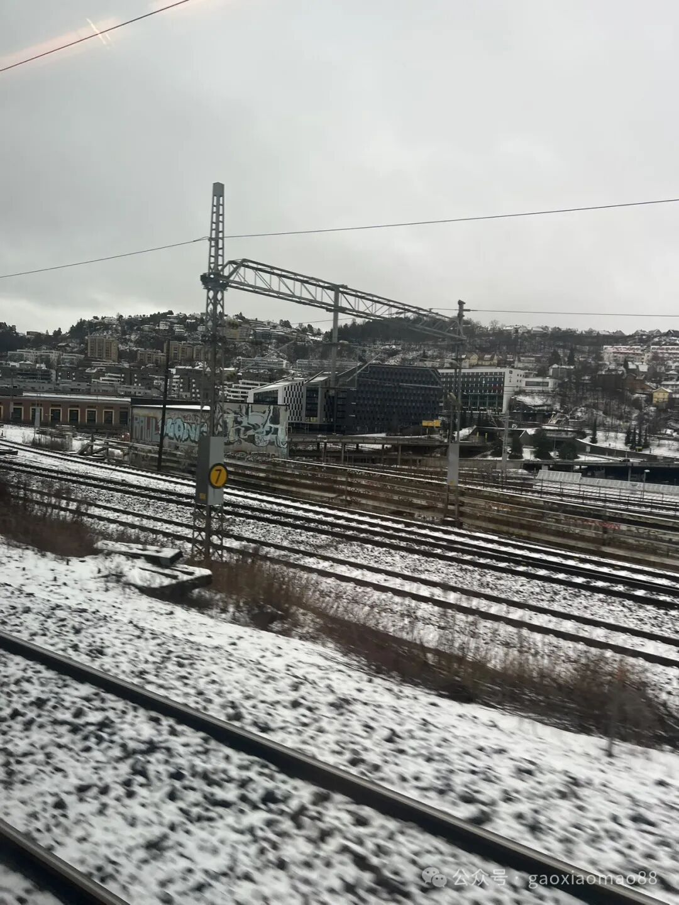

12/23
从三番飞去挪威的首都Olso。
出发前有些小感冒，导致耳道有些不通畅，在飞机降落前，耳压就很难balance，弄得耳朵很痛。
后来发现剧烈地深呼吸可以帮助把耳道弄通畅，这个时候再鼓气就可以把耳压平衡了。有点类似wim hoffman的那种呼吸强度，大约10-20次这样。
不过klm航班上的饭是经典的北欧食品，挺难吃的。


一路上过关倒是非常容易，上飞机的时候甚至是自助的，航空公司只是让我输入了申根签证的号码，甚至都没有人查看，也是第一次遇到。
入关的时候也只是略微看了一下护照就敲章了，比美国入关简单多了。
到了Olso机场以后，坐火车去olso的市中心。火车干净又有一种高级感，价格也不便宜，短短的20分钟要20美金，堪比湾区的价格。


sim卡也非常难买，机场的两家便利店都表示自己的网络坏了，不能激活sim卡。好不容易在olso的市中心找了一家便利店，店员随便甩给我一个sim卡的包裹就不理我了，让我自己去激活折腾。充分地体现了北欧人的冷漠。
再过一天就是圣诞节了，店员们一到下午2点，就表示要下班了，一整个mall的店都很准时地在3点关门了。下一次再开门要等到12/25的下午，感觉北欧人的工作强度真是让人羡慕。
预想中北欧的积雪并没有很厚，感觉这座城市似乎有一种自动抖落雪的功能，雪远远要比我熟悉的芝加哥要小。一个纬度这么高的地方，意外地暖和。